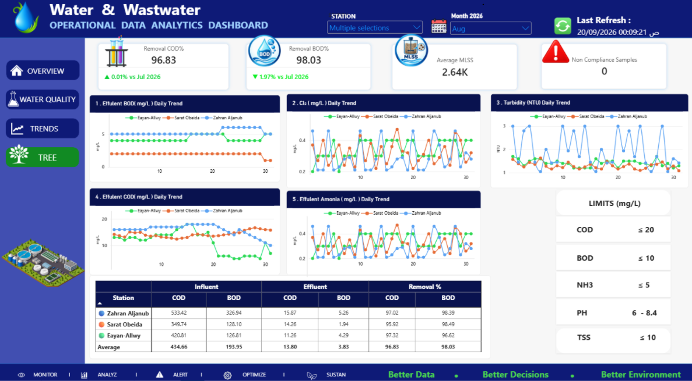
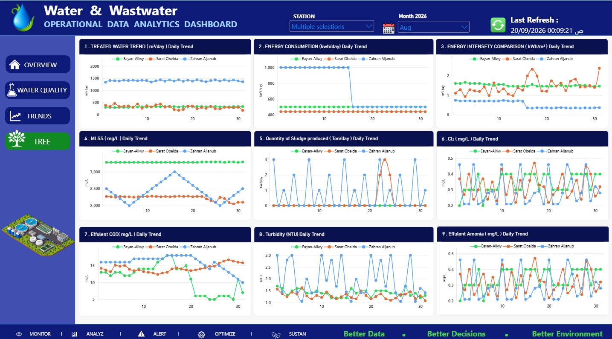
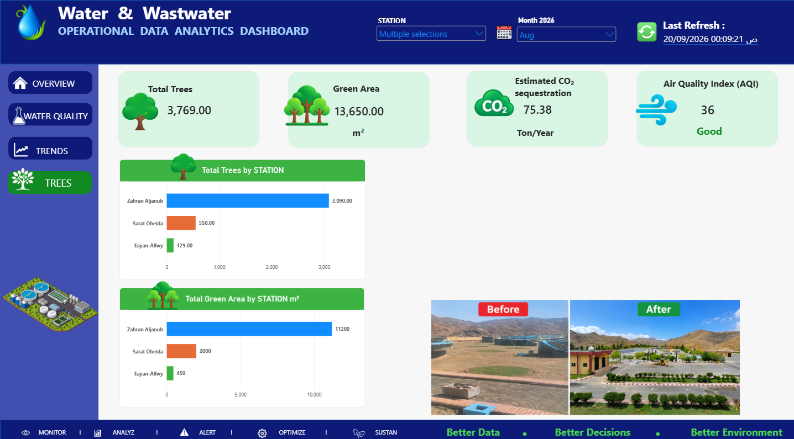

Overview

Water Quality

Trends

Trees & Sustainability

Project Overview
Interactive Power BI reporting across three water and wastewater treatment plants, combining operational monitoring, water quality analysis, daily performance trends, and environmental sustainability metrics.
Key Analysis Areas
- Operations: treated water volume, energy consumption, energy intensity (kWh/m³), hydraulic loading, and sludge production.
- Water Quality: COD and BOD removal efficiency, MLSS, effluent COD/BOD, turbidity, ammonia, residual chlorine, and non-compliance monitoring.
- Daily Trends: plant-to-plant comparisons and identification of changes in production, energy use, and effluent quality.
- Sustainability: tree counts, green area, estimated CO₂ sequestration, and air quality indicators.
Tools & Techniques
Power BI | Excel | Power Query | DAX | Data Modeling | KPI Development | Data Visualization | Performance Benchmarking
Figures shown are dashboard snapshots; operational changes require investigation before drawing causal conclusions. CO₂ sequestration is an estimate.